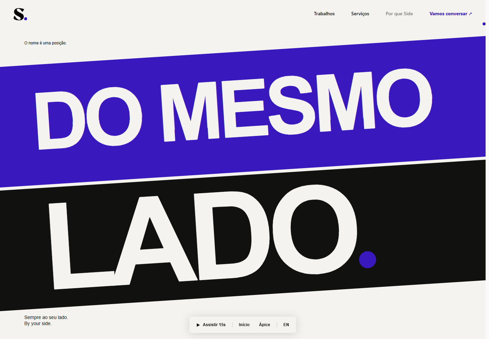

O eixo comum. A linha deixa de separar dois campos e passa a definir uma direção compartilhada. A transformação espacial conduz “Não do outro lado” a “Do mesmo lado”.

A oposição parte de cima e de baixo. No encontro, a primeira faixa ganha duas linhas: DO / MESMO. A segunda sustenta LADO. A tipografia e a inclinação são recompostas para a tela estreita.
O movimento permanece reversível por scroll. O botão “Assistir 15s” executa a mesma progressão com duração controlada; wheel, toque e teclado interrompem a demonstração.
Com reduced motion, a cena apresenta sua composição final estática e mantém a frase completa em um heading semântico.
390 × 844, emulação Chromium/Edge. Ainda não validado em Safari ou telefone físico.Foram exploradas duas direções: A dobra, com planos que viram como folhas, e O eixo comum, que transforma uma fronteira em alinhamento. A segunda foi escolhida pela clareza da metáfora, pela força gráfica e pela continuidade possível em CSS e GSAP.
Esta é apenas a cena-assinatura. Manifesto, princípios, provas de trabalho e encerramento aguardam sua aprovação. Sem push, PR ou publicação.